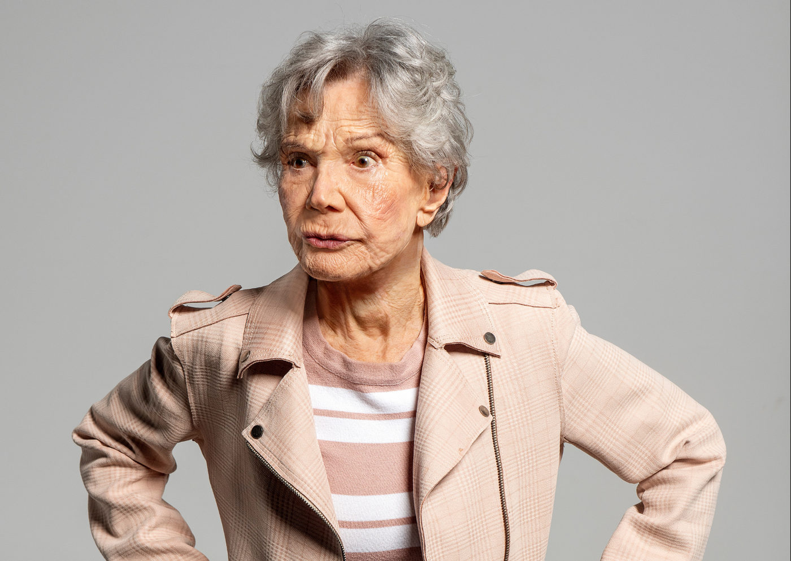

Miriam Mehler celebra 90 anos com a estreia de “Sob o Céu de Paris” no Itaú Cultural

Ícone do teatro brasileiro, Miriam Mehler comemora seus 90 anos de vida e mais de sete décadas de carreira com a estreia do espetáculo “Sob o Céu de Paris”, que entra em cartaz no Itaú Cultural a partir do dia 4 de setembro, permanecendo em temporada até 28 de setembro de 2025.
A montagem, escrita por Gabriela Rabello e dirigida por Gabriel Fontes Paiva, reúne ainda os atores Walter Breda e Rosana Maris, formando um elenco que atravessa gerações do teatro e da dramaturgia brasileira.
Um marco na trajetória de Miriam Mehler
Descrita pelo biógrafo Vilmar Ledesma como uma “espécie de dicionário do teatro paulista”, Miriam Mehler tem uma trajetória que se confunde com a própria história da cena cultural do Brasil. De sua estreia em “Eles Não Usam Black-Tie”, passando pelos palcos do TBC, Teatro de Arena e Teatro Oficina, até a fundação do Teatro Paiol, a atriz sempre esteve na linha de frente da criação artística nacional.
Reconhecida com prêmios como o Shell (2016) por Fora do Mundo e o Bibi Ferreira (2023) por A Herança, Mehler celebra a longevidade de sua carreira com uma obra que também revisita a memória e o tempo — temas que atravessam sua vida e sua arte.
Uma dramaturgia sobre memória, cidade e resistência
Em Sob o Céu de Paris, o público acompanha a história de um casal (vivido por Miriam Mehler e Walter Breda) que, nos anos 1950, recebe um apartamento na região da Marechal Deodoro, então símbolo de prestígio em São Paulo. A narrativa se desloca ao longo das décadas e mostra como a construção do Minhocão, durante a ditadura militar, transformou radicalmente o espaço urbano e impactou a vida daquela família.
Quando a neta (interpretada por Rosana Maris) visita os avós em um feriado prolongado, a trama se abre para revelar conflitos íntimos, segredos familiares e reflexões sobre como o tempo e o lugar moldam nossas existências.
Segundo o diretor Gabriel Fontes Paiva, vencedor dos prêmios Shell e APTR, “a peça fala de racismo estrutural, da decadência urbana e da ditadura militar. O Minhocão, por exemplo, foi construído por Paulo Maluf no auge da ditadura. É muito bonito poder contar essa história com três grandes atores, encabeçados por Miriam Mehler”.
Um olhar poético e político
Mais do que uma história íntima, o espetáculo reflete sobre como a cidade de São Paulo se tornou palco de transformações sociais, culturais e políticas. A degradação do espaço urbano dialoga com a passagem do tempo e com as marcas que se acumulam nas relações familiares.
A dramaturgia de Gabriela Rabello e a direção sensível de Gabriel Fontes Paiva criam uma atmosfera em que a memória pessoal se mistura à memória coletiva, com trilha sonora assinada por Chico Beltrão e figurino de Fábio Namatame.
Sinopse
O que parecia apenas uma visita de uma neta aos avós em um feriado prolongado se transforma em acontecimentos importantes e revelações. Entre gerações, memórias e mudanças da cidade, Sob o Céu de Paris fala sobre como o tempo e o espaço moldam nossas vidas.
Serviço
Espetáculo: Sob o Céu de Paris, de Gabriela Rabello
Local: Itaú Cultural – Avenida Paulista, 149 – Bela Vista, São Paulo – SP
Temporada: 4 a 28 de setembro de 2025
Sessões: quintas, sextas e sábados, às 20h; domingos e feriados, às 19h
Sala: Itaú Cultural (piso térreo)
Duração: 75 minutos
Classificação indicativa: 14 anos
Ingressos: Gratuitos – reservas disponíveis a partir das terças-feiras, às 12h, na plataforma INTI (via site do Itaú Cultural: www.itaucultural.org.br)
Acessibilidade: todas as sessões contam com interpretação em Libras